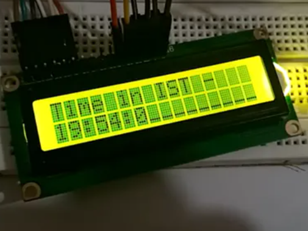
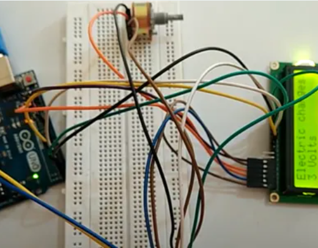

My arduino projects using C++/C -
Robotic arm -

Try making the robotic arm yourself and control with potentiometer .
Digital clock -

I made a digital clock without rtc module and with just some logic .
Digital electroscope -

I made this device to detect charges on a object in volts !